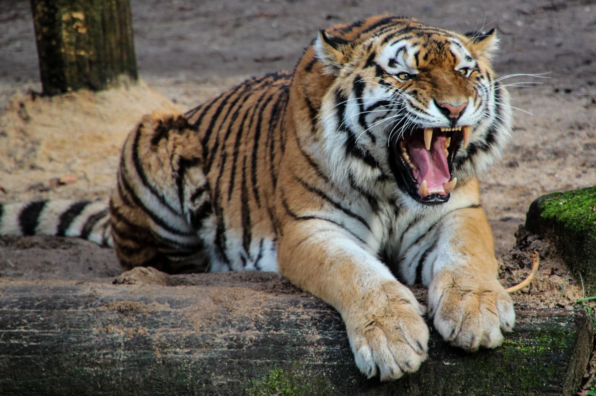
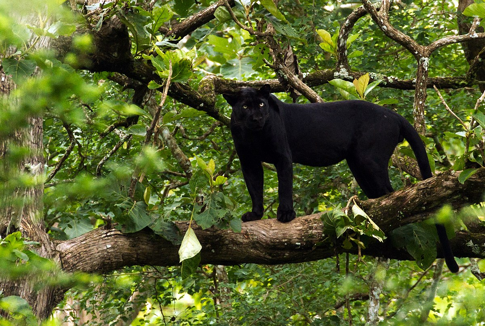

На този сайт ще откриете интересни факти за дивите котки, тяхното местообитание, поведение и защо те са важни за екосистемата.
Дивите котки не само че са невероятно красиви и мистични същества, но те играят и критична роля в природните екосистеми. Като хищници, те помагат да се поддържа балансът в популациите на други животни, предотвратявайки прекомерния растеж на определени видове, които могат да нарушат екологичната хармония. Когато популациите на тези хищници намаляват, това може да доведе до сериозни проблеми в цялата екосистема.
Освен това, дивите котки са индикатори за здравето на околната среда. Когато те се намират в баланс с природата, можем да бъдем сигурни, че екосистемата е здрава и процъфтяваща. Защитата на дивите котки означава защита на нашето бъдеще и природата, с която споделяме тази планета.
Научете повечеНие отдаваме голямо значение на защитата на дивите котки и техните хабитати. Вашето участие може да направи голяма разлика. Всеки принос, независимо колко малък, има значение. Чрез вашата подкрепа можем да помогнем на организации, които се грижат за защитата на дивите котки, както и да увеличим осведомеността за заплахите, пред които са изправени.
Със средства от дарения можем да осигурим специализирани програми за обучение, реставрация на хабитати и директна помощ на местата, където дивите котки са изложени на опасности. Вашето дарение не само ще помогне на дивите котки, но и ще създаде възможности за бъдещи поколения да се насладят на природата в нейната пълна прелест.
Дарете сега